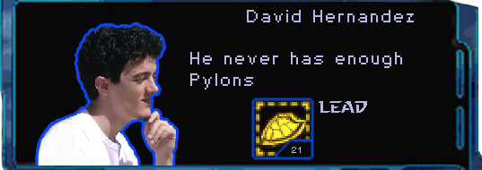
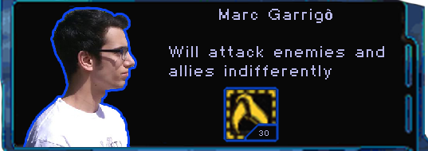
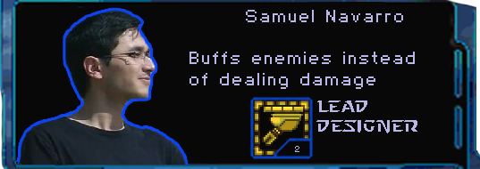
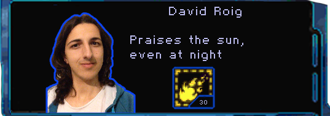
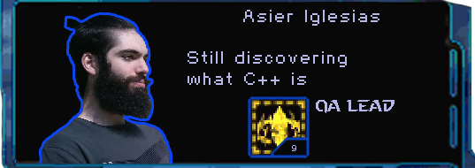
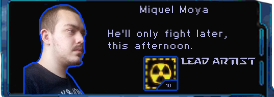

About the game
The player controls a Protoss base that’s sent to a planet to erradicate the Zerg plague. The game is similar to the original Starcraft; to win you must defeat the enemy main base, that will be shown on the map, while protecting your own base and most importantly, the "Zerg Sample", the building near the player's starting location. Loosing it means loosing the game.
Upon destroying the enemy main base, Kerrigan will appear and attack the player. Defeat her before she gets to the sample or all hope of cleansing the planet will be lost!
The Team
Leader: @Vulpem
Code Lead: @markitus18
Game Designer: @GottaCodeHarder
UI Programmer: @DRed96
QA Lead: @asierigle
Artist :@MoyaSly
Releases
1.0 Release
PLACE REALEASE LINK HERE GOES HERE
Pre-releases
You can check our pre-releases! Here.